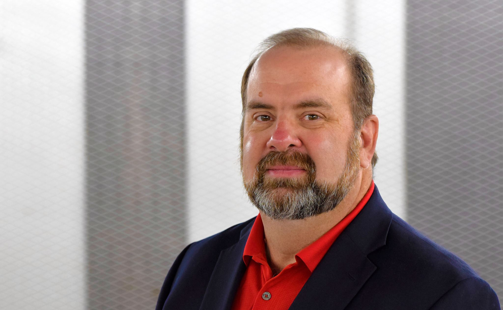

Husband. Father. Captain. Cybersecurity Director. Affiliate Professor. Author. Artist. The through-line connecting all of it is a single insistence: that the examined life — the one where you take genuine ownership of your thoughts, decisions, and the work that follows from both — is the only kind worth living.
Cognitive Sovereignty Studios · Founder & Maker
Leadership learned in the crucible of military service anchors itself in the principle of Team over Self. The birth of the servant leader occurs the moment one realizes that the people in their charge matter more than their own life. While a manager pushes, cajoles, or manipulates their team into the fray—remaining shielded by the sacrifices of others—a leader stands tall. In the darkest moments, when careers, futures, and lives are at stake, a leader steps first into harm's way. They provide the example, the protection, and the inspiration, turning to their team with a single command: "Follow me."
You calculate the trajectory, account for every variable, and commit to the decision. The shell follows physics — not intention, not effort, not good faith. Physics. Either the calculation was right or it wasn't. There is no partial credit in field artillery, and there is no taking the round back once it leaves the tube.
That discipline — the insistence on precision, the willingness to own the outcome, the recognition that decisions have consequences that cannot be undone — is the foundation of everything that came after. It is in every essay written, every cybersecurity framework built, every chess piece painted. The canvas is different each time. The standard of deliberateness is not.
The round either hits or it doesn't. You either thought it through or you didn't. The willingness to be accountable to that fact is the beginning of cognitive sovereignty.
Service also teaches you something subtler: that the people to your left and right are counting on you to think clearly, especially when circumstances make thinking clearly difficult. That responsibility — to the mission and to the people beside you — never leaves. It just finds new theaters of operation.
The adversary does not announce their intentions. The threat surface is never fully mapped. The consequences of a miscalculation are real, expensive, and sometimes irreversible. You build your defenses with the information available, you train your people to think rather than just execute, and you accept that the work is never finished — only continuously improved.
Almost three decades in cybersecurity leadership — across Fortune 100 environments, federal contractors, and the classroom at Regis University — the consistent lesson has been the same one field artillery teaches: the quality of the thinking determines the quality of the outcome. Tools change. Threat actors evolve. The requirement to think clearly, question assumptions, and take genuine ownership of your analysis does not.
Teaching cybersecurity at the affiliate professor level adds a dimension that pure practice cannot: the obligation to make the thinking explicit, to surface the reasoning behind the decision, to transfer not just knowledge but judgment. That obligation sharpens your own thinking in ways that professional practice alone never quite achieves.
The essay "Beyond Good Intentions" — co-authored with Deborah Barnes — came directly from this professional world: the recognition that homogeneous security teams are not just ethically incomplete but operationally vulnerable. Inclusion is not a social good grafted onto a technical discipline. It is a security imperative. Homogeneous teams create predictable defensive patterns. Sophisticated adversaries count on that predictability.
It emerged from a genuine unease — the observation that people were increasingly outsourcing not just tasks but judgment to systems designed to make them predictable rather than capable. The Google effect on memory. The algorithmic curation of reality. The robo-advisor replacing human judgment on decisions that carry moral weight. The gradual, comfortable atrophy of the cognitive muscles that make us irreducibly human.
The manifesto that carries the name "Cognitive Sovereignty" argues that the choice is not whether to engage with artificial intelligence — that choice was made for all of us before we were asked. The choice is whether to engage consciously: as a participant who brings judgment, creativity, and moral reasoning to the collaboration, or as a subject who receives algorithmically curated conclusions and calls them thoughts.
We are not observers of the AI transformation. We are embedded participants. The illusion that we can opt out is perhaps the most dangerous delusion of our time.
The Gen Z paper — co-authored with his daughter — applies the same lens to a generational question. What looks like nihilism is better understood through Nietzsche: not the rejection of meaning, but the collapse of inherited meaning systems that demands the construction of new ones. We built the ladder to the American Dream. Our decisions shifted the gound, the foundation the dadder was built upon. That is not a judgment about Gen Z's character. It is a reckoning with our own legacy.
Frankenstein as a chess king. Elvira as a queen — and did you know Elvira is from Colorado? Glow-in-the-dark gnome pawns. A rubber duck carrying an artist's paintbrush across an ocean liner, heading somewhere neither the duck nor its maker will ever know. These combinations do not happen despite the precision demanded by field artillery and cybersecurity. They happen because of it.
Cognitive sovereignty requires the freedom to arrive somewhere no straight line would take you. The knight is the most honest piece on the chess board — it moves in two directions at once, it jumps over obstacles, and it arrives somewhere no one anticipated. That is not a flaw in the piece's design. It is the piece's entire value.
Every object produced under the Cognitive Sovereignty Studios mark begins as a blank 3D-printed PLA form — raw material, full of potential, committed to nothing. What it becomes is decided once, by one hand, at one moment, and never repeated. The singularity is not a marketing claim. It is the foundational condition of the work. To paint a second Violet Sage would be to deny that the first one was complete.
Cognitive Sovereignty Studios currently runs three divisions: Checkmate Curiosities for the chess sets, Traveling Drakes for the hand-painted cruise and jeep ducks, and The Analog Years — a forthcoming division of hand-painted 70s and 80s scenes in a Rockwellian vein — waiting for the work that will fill it.
The work happens in Colorado — the same state that produced Elvira, the Denver Broncos, and what was for several years the largest non-profit haunted house in the state. Building and running a large-scale community haunted house requires the same skill set as field artillery and cybersecurity: logistics, leadership, precision under pressure, and the absolute refusal to let the experience be mediocre for the people who show up expecting something real.
The family is the context that makes all of it make sense. A husband. A father. Someone who co-authors papers with his daughter about the generation she belongs to and the world her parents' generation handed her. The collaboration with his daughter on the Gen Z essay is not a professional exercise. It is a father trying to understand his daughter's world with the same rigor he brings to everything else — and being honest enough to admit, in print, that his first instinct was wrong.
The examined life is not a comfortable life. It is a more honest one. And honesty, it turns out, is the prerequisite for everything worth doing.
This corner of the internet — Professor Q's Corner — is where all of it lives together. The essays, the chess sets, the ducks, the thoughts, the rants that haven't been written yet. It is not a portfolio. It is not a personal brand in the modern sense. It is a record of a mind in motion, taking ownership of its conclusions, and inviting anyone who finds it interesting to engage.
The studio exists at the intersection of precision and imagination — the same intersection where field artillery meets non-sequitur chess pieces, where cybersecurity meets hand-painted rubber ducks, where a manifesto about AI meets a glow-in-the-dark gnome pawn. Three divisions, one maker's mark, and the absolute commitment that every object produced here will be singular.
For commissions, press inquiries, speaking or teaching engagements, or simply to continue a conversation that started somewhere on this site — the contact page is open.